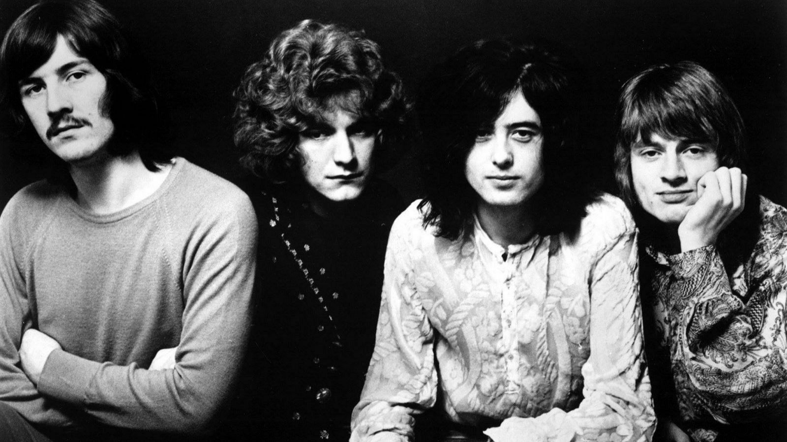
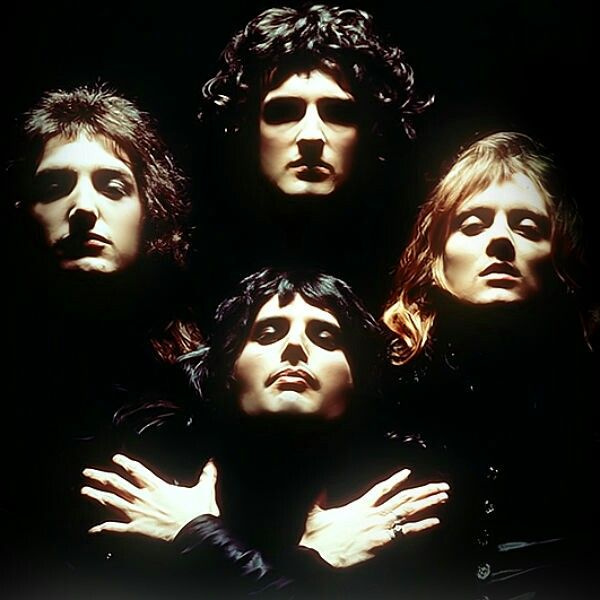
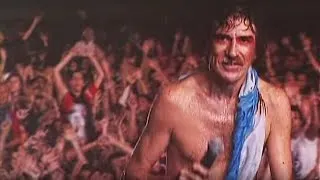

Historia del Rock Mundial
El rock nació en los años 50 en Estados Unidos, fusionando blues, country y rhythm & blues. Figuras como Elvis Presley, Chuck Berry y Little Richard fueron pioneros del género.
Canciones destacadas
Artistas Destacados

Led Zeppelin

Queen
kurt kobain
Historia del Rock en Argentina
En Argentina, el rock surgió a fines de los 60 con bandas como Los Gatos y Almendra, y se consolidó en los 80 con Soda Stereo, Charly García y Spinetta.
Canciones destacadas
Artistas destacados
Gustavo Cerati
